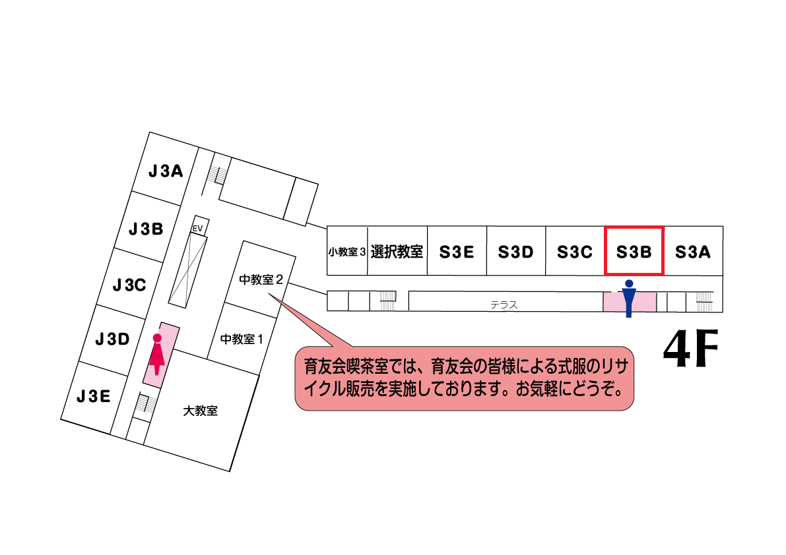
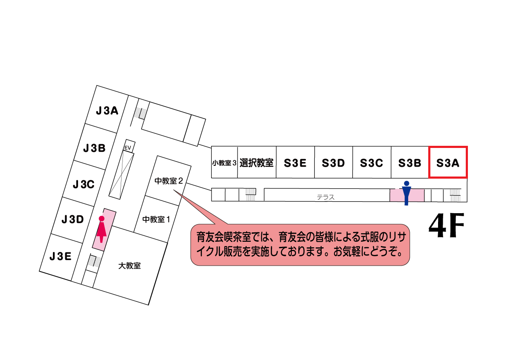

高2有志謎解き
 謎解き周遊学舎にて
謎解き周遊学舎にて
謎を解くことで、学校の魅力を知ることができるゲームです。難易度に応じた2コースを提供する予定です。当日の来訪を是非お待ちしております。
謎解き周遊学舎にて謎を解くことで、学校の魅力を知ることができるゲームです。難易度に応じた2コースを提供する予定です。当日の来訪を是非お待ちしております。
高2有志
 Life Style in Nanzan Boys
Life Style in Nanzan Boys
南山男子部へ進学したい受験生、保護者の方必見！！高校生徒会長が贈る、南山男子部の生活ガイド&受験前の今だからこそ、南男生から伝えたいこと
Life Style in Nanzan Boys南山男子部へ進学したい受験生、保護者の方必見！！高校生徒会長が贈る、南山男子部の生活ガイド&受験前の今だからこそ、南男生から伝えたいこと
鉄道研究会
 車両走行・鉄道模型展示・レポート添付
車両走行・鉄道模型展示・レポート添付
鉄道の魅力をもっと身近に感じてみませんか？模型展示やレポートで、鉄道の世界を楽しく紹介しています。ぜひ会場に足を運んで、奥深い鉄道の世界を体験してください！
車両走行・鉄道模型展示・レポート添付鉄道の魅力をもっと身近に感じてみませんか？模型展示やレポートで、鉄道の世界を楽しく紹介しています。ぜひ会場に足を運んで、奥深い鉄道の世界を体験してください！
初代 VR-Game-Maker
 頭文字N
頭文字N
「VRなんて無理だよ」そんな空気を突き破り、在宅のみで生まれたレースゲーム——その名も《頭文字N》。文化祭に前例なし、仲間もゼロからのスタートUnityと熱意だけを武器に、未開のVRレースに挑んだ僕らの""軌跡""が、今ここに走り出す。仮想空間で展開される異次元のドライビングそのハンドル、君は握れるか？
頭文字N「VRなんて無理だよ」そんな空気を突き破り、在宅のみで生まれたレースゲーム——その名も《頭文字N》。文化祭に前例なし、仲間もゼロからのスタートUnityと熱意だけを武器に、未開のVRレースに挑んだ僕らの""軌跡""が、今ここに走り出す。仮想空間で展開される異次元のドライビングそのハンドル、君は握れるか？
とある高校生が演劇してみた

劇(前座＆アラジン）
初めてまして！あるいはお久しぶりです！去年はクラス企画として行っていた物を今回は有志企画としてやらせて頂きます！今回はアラジンです！当日の時間などに関しましてはInstagramに〔とある高校生が演劇してみた〕と言う名前のアカウントがございますので、随時そちらの方で更新していきます！今年も絶対に皆さんへ笑顔と満足感を与えられるショーを行います‼︎
初めてまして！あるいはお久しぶりです！去年はクラス企画として行っていた物を今回は有志企画としてやらせて頂きます！今回はアラジンです！当日の時間などに関しましてはInstagramに〔とある高校生が演劇してみた〕と言う名前のアカウントがございますので、随時そちらの方で更新していきます！今年も絶対に皆さんへ笑顔と満足感を与えられるショーを行います‼︎
サンダバ
優駿の蹄跡~馬と人とのキズナ~
うまぴょい
優駿の蹄跡~馬と人とのキズナ~うまぴょい
緑鳥
南山生が本気で自主制作映画作ってみた件
南山生が繰り広げるコメディ・アクション・ホラー・SFの四作品をとくとご覧あれ！
南山生が本気で自主制作映画作ってみた件南山生が繰り広げるコメディ・アクション・ホラー・SFの四作品をとくとご覧あれ！
クイズ研究会

パネルクイズ体験会
早押しクイズやペーパー形式のクイズを集まった人でやってみようという企画です！参加者を募りアタック25のようなパネルクイズも行います！恒常で集まった方で１ゲーム早押しクイズを行い、待ってる間にペーパークイズをお渡しします。問題は全問オリジナル、初心者・未経験者向けの難易度となっております。尚、パネルクイズは未経験者向けを土日の10時半から1回ずつ、経験者向けを土曜日の1時半に1回行います。参加を希望する方は時間までにS3Aに行き、参加の申し込みをお願いします。
早押しクイズやペーパー形式のクイズを集まった人でやってみようという企画です！参加者を募りアタック25のようなパネルクイズも行います！恒常で集まった方で１ゲーム早押しクイズを行い、待ってる間にペーパークイズをお渡しします。問題は全問オリジナル、初心者・未経験者向けの難易度となっております。尚、パネルクイズは未経験者向けを土日の10時半から1回ずつ、経験者向けを土曜日の1時半に1回行います。参加を希望する方は時間までにS3Aに行き、参加の申し込みをお願いします。
音ゲー
Burning Amp
unityというゲームエンジンを使い音ゲーを出展します！タイミングよく演奏することによって燎火が大きくなります！皆さんで燎火を大きくし文化祭を盛り上げましょう！
Burning Ampunityというゲームエンジンを使い音ゲーを出展します！タイミングよく演奏することによって燎火が大きくなります！皆さんで燎火を大きくし文化祭を盛り上げましょう！